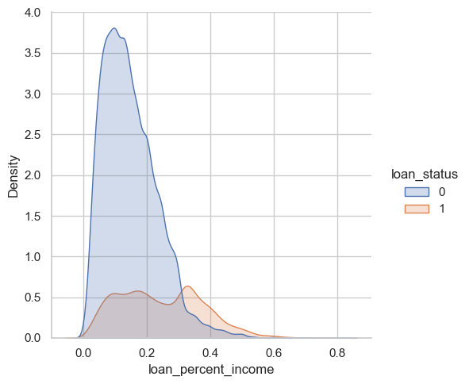

import pandas as pd
url = "https://raw.githubusercontent.com/PhilChodrow/ml-notes/main/data/credit-risk/train.csv"
df_train = pd.read_csv(url)Abstract
Insert here
Data
We are diving into a Credit Risk Dataset that simulates credit bureau data.
Here is a first look at the raw data:
df_train.head()| person_age | person_income | person_home_ownership | person_emp_length | loan_intent | loan_grade | loan_amnt | loan_int_rate | loan_status | loan_percent_income | cb_person_default_on_file | cb_person_cred_hist_length | |
|---|---|---|---|---|---|---|---|---|---|---|---|---|
| 0 | 25 | 43200 | RENT | NaN | VENTURE | B | 1200 | 9.91 | 0 | 0.03 | N | 4 |
| 1 | 27 | 98000 | RENT | 3.0 | EDUCATION | C | 11750 | 13.47 | 0 | 0.12 | Y | 6 |
| 2 | 22 | 36996 | RENT | 5.0 | EDUCATION | A | 10000 | 7.51 | 0 | 0.27 | N | 4 |
| 3 | 24 | 26000 | RENT | 2.0 | MEDICAL | C | 1325 | 12.87 | 1 | 0.05 | N | 4 |
| 4 | 29 | 53004 | MORTGAGE | 2.0 | HOMEIMPROVEMENT | A | 15000 | 9.63 | 0 | 0.28 | N | 10 |
I want to highlight several important features of this dataset.
loan_percent_incomeis ratio of the loan amount to the individual’s incomeloan_int_rateis the annual interest rate on the loan.loan_statustells us whether or not the individual defaulted on their loan. This a a binary feature where0indicates the individual defaulted, and1indicates the loan was repaid in full. This is our Target Variable.
Lets have a look at how common defaulting is in our training data:
df_train["loan_status"].value_counts(normalize=True)loan_status
0 0.78242
1 0.21758
Name: proportion, dtype: float64In the dataset, around 21% of borrowers default on their loan. This is going to be the our base rate for prediction.
df_train["person_age"].describe()count 26064.000000
mean 27.734385
std 6.362612
min 20.000000
25% 23.000000
50% 26.000000
75% 30.000000
max 144.000000
Name: person_age, dtype: float64There seems to be some slight errors in our data with the age of certain individuals. 144, although impressive, is highly unlikely. Thus, without context for why the data has such an outlier, I am going to filter our data to exclude persons over 100 years old.
df_train = df_train[df_train["person_age"] < 100]df_train.head()| person_age | person_income | person_home_ownership | person_emp_length | loan_intent | loan_grade | loan_amnt | loan_int_rate | loan_status | loan_percent_income | cb_person_default_on_file | cb_person_cred_hist_length | |
|---|---|---|---|---|---|---|---|---|---|---|---|---|
| 0 | 25 | 43200 | RENT | NaN | VENTURE | B | 1200 | 9.91 | 0 | 0.03 | N | 4 |
| 1 | 27 | 98000 | RENT | 3.0 | EDUCATION | C | 11750 | 13.47 | 0 | 0.12 | Y | 6 |
| 2 | 22 | 36996 | RENT | 5.0 | EDUCATION | A | 10000 | 7.51 | 0 | 0.27 | N | 4 |
| 3 | 24 | 26000 | RENT | 2.0 | MEDICAL | C | 1325 | 12.87 | 1 | 0.05 | N | 4 |
| 4 | 29 | 53004 | MORTGAGE | 2.0 | HOMEIMPROVEMENT | A | 15000 | 9.63 | 0 | 0.28 | N | 10 |
Exploration
import seaborn as sns
import matplotlib.pyplot as plt
sns.set_theme(style="whitegrid")sns.displot(data=df_train, x="loan_percent_income", hue="loan_status", kind="kde", bw_adjust=0.9, fill=True, alpha=0.25)
Kernel Density Estimation (KDE)
sns.kdeplot(data=df_train, x="cb_person_cred_hist_length", y="loan_int_rate", cmap="rocket", fill=True)
sns.catplot(data=df_train, kind="bar", x="person_home_ownership", y="loan_percent_income", hue="loan_status")
import numpy as np
bins = [0, 5, 10, 15, 20, np.inf]
labels = ['0-5', '5-10', '10-15', '15-20', '20+']
df_train.groupby(
pd.cut(df_train['cb_person_cred_hist_length'], bins=bins, labels=labels), observed=True
)[['person_age', 'person_emp_length']].agg(['mean'])| person_age | person_emp_length | |
|---|---|---|
| mean | mean | |
| cb_person_cred_hist_length | ||
| 0-5 | 24.232436 | 4.273877 |
| 5-10 | 29.977019 | 5.423177 |
| 10-15 | 40.030518 | 5.957936 |
| 15-20 | 41.484354 | 6.021038 |
| 20+ | 57.576271 | 5.615819 |